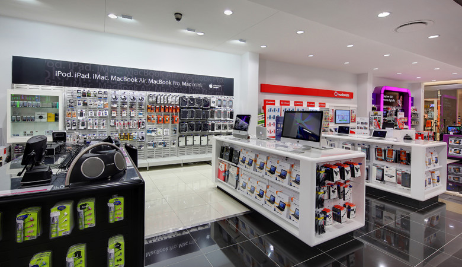

INCREDIBLE CONNECTIONS
Incredible Connection is a consumer electronics and IT retailer active in southern Africa. Software connection was founded in 1989 by entrepreneurs Michael Glezerson (Australia) and Michael David Smith (Australia). The initial store was located in Sandton City, Johannesburg. In 1995 the first Incredible connection opened in Woodmead, Johannesburg. [1] The company is now the largest consumer electronics and IT retailer in South Africa and the African continent. On 15 December 1998, Incredible Connection was acquired by Connection Group Holdings Limited and now operates as subsidiary of that company,[2] itself a subsidiary of JD Group Limited.[3] As of 2018, Incredible Connection has 78 retail outlets in southern Africa,[4] up from 34 in 2005.[5]

